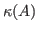

Reliable estimates for the condition number of a large (sparse) matrix
 are important in many applications.
To get an upper bound for the condition number
are important in many applications.
To get an upper bound for the condition number

, a lower bound for the smallest singular value is needed. Krylov subspaces are usually unsuitable for finding a good approximation to the smallest singular value. Therefore, we study extended Krylov subspaces which turn out to be ideal for the simultaneous approximation of both the smallest and largest singular value of a matrix. First, we develop a new extended Lanczos bidiagonalization method. With this method we obtain a guaranteed lower bound for the condition number. Moreover, the method also yields a probabilistic upper bound for . This probabilistic upper bound holds with a user-chosen probability.